As we have discussed previously, we will often have to specify a null
hypothesis in terms of a complete set of observable properties of the data.
Only in specific cases (e.g. the two point autocorrelation function), there is
a one-to-one correspondence to a class of models (here the ARMA process). In
any case, if  denotes a surrogate time series, the
constraints will most often be of (or can be brought into) the form
denotes a surrogate time series, the
constraints will most often be of (or can be brought into) the form

Such constraints can always be turned into a cost function
The fact that 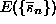 has a global minimum when the constraints
are fulfilled is unaffected by the choice of the weights 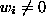 and the
order q of the average. The least squares or 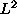 average is obtained at
q=2, 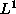 at q=1 and the maximum distance when 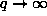. Geometric
averaging is also possible (and can be formally obtained by taking the limit
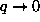 in a proper way). We have experimented with different choices of q
but we haven't found a choice that is uniformly superior to others. It seems
plausible to give either uniform weights or to enhance those constraints which
are particularly difficult to fulfil. Again, conclusive empirical results are
still lacking.
Consider as an example the constraint that the sample autocorrelation function
of the surrogate 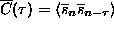
(data rescaled to zero mean and unit variance) are the same as those of the
data, 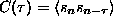. This is done by specifying zero
discrepancy as a constraint 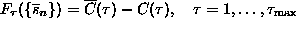. If
the correlations decay fast, 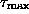 can be restricted,
otherwise 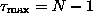 (the largest available lag). Thus, a
possible cost function could read
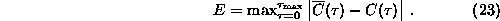
Other choices of q and the weights are of course also possible.
In all the cases considered in this paper, one constraint will be that the surrogates take on the same values as the data but in different time order. This ensures that data and surrogates can equally likely be drawn from the same (unknown) single time probability distribution. This particular constraint is not included in the cost function but identically fulfilled by considering only permutations without replacement of the data for minimisation.
By introducing a cost function, we have turned a difficult nonlinear, high
dimensional root finding problem (21) into a minimisation problem
(22). This leads to extremely many false minima whence such a strategy
is discouraged for general root finding problems [42]. Here, the
situation is somewhat different since we need to solve Eq.(21) only
over the set of all permutations of  . Although this set is big, it is
still discrete and powerful combinatorial minimisation algorithms are
available that can deal with false minima very well. We choose to minimise
among all permutations
. Although this set is big, it is
still discrete and powerful combinatorial minimisation algorithms are
available that can deal with false minima very well. We choose to minimise
among all permutations  of the
original time series
of the
original time series  using the method of simulated annealing.
Configurations are updated by exchanging pairs in
using the method of simulated annealing.
Configurations are updated by exchanging pairs in  . The
annealing scheme will decide which changes to accept and which to reject. With
an appropriate cooling scheme, the annealing procedure can reach any desired
accuracy. Apart from simulated annealing, genetic algorithms [35]
have become very popular for this kind of problems and there is no reason why
they couldn't be used for the present purpose as well.
. The
annealing scheme will decide which changes to accept and which to reject. With
an appropriate cooling scheme, the annealing procedure can reach any desired
accuracy. Apart from simulated annealing, genetic algorithms [35]
have become very popular for this kind of problems and there is no reason why
they couldn't be used for the present purpose as well.